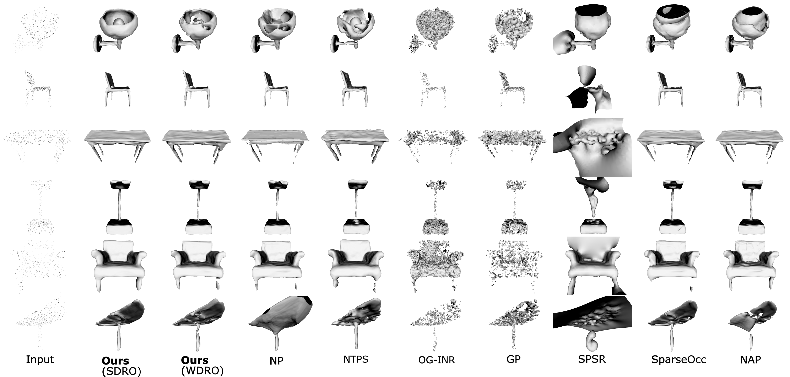

Comparison Results
We fit a neural SDF to a sparse noisy point cloud solely, using a distributionally robust loss function. Compared to the state-of-the-art, our method provides more faithful and robust reconstructions, as can be seen in these detailed and thin structures of ShapeNet objects.
Faust reconstructions. CONet and POCO use data priors for this experiment.

Reconstructions from VGGSfM point clouds of sparse views from BlendedMVS and Tanks & Temples datasets.